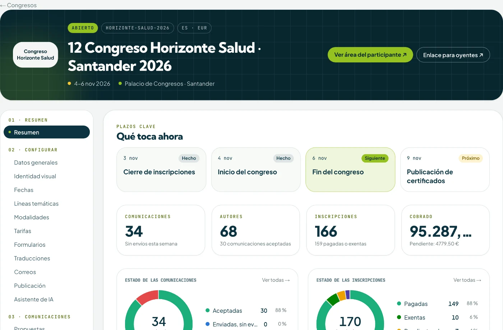

Plataforma de gestión de congresos
Todo su congreso, en una sola plataforma.
Comunicaciones, evaluación, inscripciones, pagos, facturas, programa, acreditaciones, asistencia, certificados y aula virtual. Desde la convocatoria hasta el último certificado, sin hojas de cálculo ni herramientas sueltas.
Para OPC, sociedades científicas y universidades.

Probada en congresos reales
Antes de ofrecérsela, la hemos usado para organizar congresos internacionales como GENDERCOM y MEDIAETHICS: cada función nace de un problema real de una edición real.
Cómo funciona
Vea la plataforma en marcha
Cinco recorridos habituales de un congreso, de principio a fin, tal como ocurren en la plataforma.
01
De la inscripción a la factura, sin intervención manual
La persona elige su tarifa, paga y recibe al momento su factura. Usted lo ve todo en el panel, con cada cobro conciliado.
- Inscripción
- Pago
- Factura
Animación ilustrativa con datos ficticios.
02
Envío y evaluación de comunicaciones
Los autores envían su propuesta; la plataforma la asigna a revisores en doble ciego, recoge las puntuaciones y comunica la decisión.
- Envío
- Asignación
- Evaluación
- Decisión
Animación ilustrativa con datos ficticios.
03
Acreditación QR y control de acceso
Cada congresista recibe su acreditación con código QR. En la puerta basta un móvil para registrar entradas, sesiones, material o actos sociales.
- Acreditación
- Lectura
- Registro
Animación ilustrativa con datos ficticios.
04
Asistencia, encuesta y certificado
La plataforma suma los minutos presenciales y en línea, pide la encuesta de satisfacción y libera el certificado cuando corresponde.
- Asistencia
- Encuesta
- Certificado
Animación ilustrativa con datos ficticios.
05
Un asistente de IA dentro del panel
Pregunte en lenguaje natural por el estado de su congreso y pídale que prepare tareas. El asistente propone; nada se guarda sin su confirmación.
- Pregunta
- Respuesta
- Confirmación
Animación ilustrativa con datos ficticios.
Para quien asiste
Así lo vive cada congresista
Cada persona tiene su área privada, con la imagen de su congreso: todo lo suyo en un solo sitio, en el móvil o en el ordenador, sin contraseñas.
Programa
Un programa que da gusto consultar
Monte la parrilla una sola vez y publíquela en su web, en el área de cada congresista y en PDF. Si algo cambia, se publica una versión nueva y se avisa a quien interviene.
- Salas y sesiones en paralelo, sin solapes: la plataforma avisa de los conflictos.
- Ponentes, moderación y comunicaciones asignadas a cada sesión.
- Sesiones presenciales, en línea o híbridas, con su aula virtual.
Jueves, 5 de noviembre
Auditorio
Sala A
Sala B · en línea
09:00
10:00
11:00
12:00
13:00
☕ 10:30 · Pausa café
Ilustración con datos ficticios.
Módulos
Todo lo que necesita un congreso, conectado
Cada módulo se activa por congreso. Empiece con lo que necesita y añada el resto cuando lo necesite.
Comunicaciones y evaluación
Convocatoria, envío de resúmenes y textos completos, revisión en doble ciego con rúbricas, reparto automático, segunda ronda, comité científico y premios.
Inscripciones y pagos
Tarifas por plazos y perfiles, cupos, pago con tarjeta (Redsys) o transferencia, y cambio de forma de pago antes de pagar.
Facturación
Factura emitida al cobrar, a nombre de la persona o de su institución, con series propias, proformas y facturas rectificativas.
Terceros, códigos y grupos
Entidades que compran plazas para su personal, códigos de descuento e invitación, grupos e inscripciones pagadas por un tercero con su propia factura.
Acreditaciones y check-in
Acreditaciones con QR y color por perfil, impresión por lotes y envío por correo. Lector en el móvil para entradas, sesiones, material y actos con cupo.
Asistencia y créditos
Minutos presenciales y en línea por persona, reglas de formación continuada, test de evaluación e informe para la comisión acreditadora.
Encuestas y certificados
Encuestas generales y por sesión, anónimas u obligatorias, y certificados verificables que se liberan cuando se cumplen los requisitos.
Asistente de IA
Consultas en lenguaje natural sobre inscripciones, pagos, comunicaciones o asistencia, y borradores que nada guarda sin su confirmación.
Aula virtual
Aula propia para cada congreso, sin enlaces de terceros: salas, turnos de palabra, grabación y asistencia en línea contada automáticamente.
Correos y plantillas
Plantillas editables en cada idioma para cada momento del congreso, con cola de envío, reintentos y registro de todo lo enviado.
Multiempresa
Varias organizaciones en la misma plataforma, cada una con su equipo, sus congresos, su marca y sus datos separados.
¿Necesita algo más?
Cuéntenos cómo organiza su congreso y le enseñamos cómo encaja en la plataforma.
Solicitar demoIlustraciones con datos ficticios.
Detalles que importan
Pensada para quien organiza y para quien asiste
Con su identidad
Logotipo, colores y tipografías de cada congreso en la web pública, el área privada, las acreditaciones y los certificados.
Varios idiomas
Textos, formularios y correos en los idiomas de su congreso.
Sin contraseñas
Congresistas y equipo entran con un enlace o un código que reciben por correo.
Área privada del congresista
Inscripción, facturas, comunicaciones, acreditación, encuestas y certificados en un solo sitio.
En cualquier dispositivo
Funciona en el navegador del ordenador, la tableta y el móvil. No hay nada que instalar.
Conectado con IA
Su equipo puede consultar y operar el congreso desde su asistente de IA, con los mismos permisos que en el panel.
Para quién
Una plataforma, tres formas de organizar
Organizadores profesionales de congresos (OPC)
Gestione varios congresos y clientes a la vez, cada uno con su marca, su equipo y su facturación.
Sociedades científicas
Su congreso anual, edición tras edición: clone la anterior, conserve la configuración y ofrezca créditos de formación continuada.
Universidades y grupos de investigación
Congresos y jornadas con evaluación por pares, programa, certificados verificables y facturación a la institución.
Preguntas frecuentes
Lo que suelen preguntarnos
¿Tengo que instalar algo?
No. Congresly funciona en el navegador. El lector de acreditaciones también: basta un móvil con cámara.
¿Puedo usar la imagen de mi congreso?
Sí. Cada congreso lleva su logotipo, sus colores y sus textos, tanto en lo que ve el congresista como en los documentos que recibe.
¿Qué formas de pago admite?
Tarjeta a través de Redsys y transferencia bancaria, con factura automática en ambos casos.
¿Puedo empezar solo con algunos módulos?
Sí. Los módulos se activan por congreso: puede empezar, por ejemplo, con inscripciones y certificados, y añadir la evaluación o el aula virtual más adelante.
¿Cuánto cuesta?
Depende del tamaño del congreso y de los módulos que necesite. En la demostración vemos su caso y le preparamos una propuesta.
Solicitar demo
Vea Congresly con su propio congreso en mente
Cuéntenos qué organiza y le mostraremos la plataforma en una videollamada de unos 30 minutos.
- Recorrido por los módulos que le interesan
- Respuestas a sus casos concretos
- Propuesta adaptada a su congreso